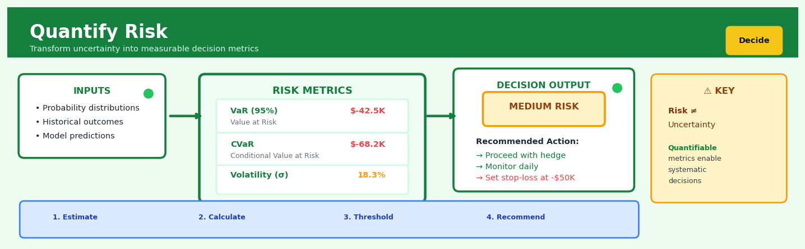

Quantify Risk#


The biggest mistake teams make is confusing uncertainty with risk. Uncertainty is when you don't know the possible outcomes, but risk is when you know the distribution and can calculate expected losses. If you can't quantify it with metrics like VaR or confidence intervals, you're not ready to make a data-driven decision—you're still in the explore phase gathering more data.
The 60-Second Version#
What it does: Quantify Risk turns “what could go wrong” into numbers you can compare against potential rewards and budget for accordingly.
When to use it: Use it when facing uncertain outcomes with financial consequences—launching products, allocating capital, setting insurance reserves, or deciding whether to proceed with projects that might fail.
What you get back: A distribution of possible losses with probabilities attached, letting you answer “How much could we lose?” and “How likely is it?” in the same breath.
At a Glance
Difficulty |
Moderate |
Typical runtime |
Minutes to hours depending on simulation complexity |
What you bring |
Historical loss data, expert estimates of probabilities, or ranges of possible outcomes |
What you get |
Probability distributions, expected losses, Value at Risk, and confidence intervals around potential downsides |
Heuristix bucket |
Decide — Decision Intelligence |
Risk quantification is only as good as your probability estimates—garbage assumptions produce precisely calculated nonsense.
Learning Objectives#
After reading this chapter, a business user will be able to:
Identify situations where quantifying risk adds value over qualitative assessments, such as evaluating insurance coverage levels, prioritising cybersecurity investments, or deciding between projects with uncertain returns.
Interpret probability distributions, Value at Risk figures, and Expected Shortfall metrics to explain the likelihood and potential magnitude of losses to executives and boards.
Use risk quantification outputs to set risk appetite thresholds, allocate capital reserves, or justify go/no-go decisions on strategic initiatives with quantified confidence levels.
After reading this chapter, a data scientist will be able to:
Implement Monte Carlo simulation and historical scenario analysis to generate loss distributions, handling data sparsity in tail events and dependencies between risk factors.
Calibrate confidence levels for VaR calculations and time horizons for risk models based on the organisation’s risk tolerance and regulatory requirements.
Validate risk models through backtesting against realised outcomes, diagnose underestimation of tail risks, and identify when distributional assumptions break down.
Overview#
Quantify Risk is a decision intelligence technique that transforms uncertain outcomes into measurable quantities, enabling organisations to make informed choices under uncertainty. At its core, risk quantification assigns numerical values—typically probabilities and monetary impacts—to potential adverse events, producing metrics such as Value at Risk (VaR), Expected Shortfall, and probability-weighted loss distributions. This technique belongs to the broader family of probabilistic risk analysis methods, drawing from statistical inference, simulation, and decision theory to convert qualitative concerns into actionable quantitative assessments.
When to Use This#
Use Quantify Risk when:
Capital allocation decisions require defensible thresholds — When determining how much capital to hold against potential losses, regulators and boards require quantified risk measures with clear confidence levels and time horizons.
Comparing strategic alternatives with different risk profiles — When two investment opportunities have similar expected returns but vastly different downside scenarios, quantified risk metrics enable apples-to-apples comparison.
Setting risk limits and triggers for operational controls — When establishing automated stop-loss rules, credit limits, or inventory buffers, you need precise numerical thresholds derived from loss distributions.
Pricing products that embed risk transfer — When setting insurance premiums, loan interest rates, or derivative prices, the underlying risk must be quantified to ensure adequate compensation.
Communicating risk exposure to non-technical stakeholders — When presenting to boards or clients, a single number like “95% VaR of £2.3M” communicates more effectively than vague statements about “significant exposure.”
Stress testing and scenario planning — When assessing resilience to extreme but plausible events, quantified risk measures provide the baseline against which stressed scenarios are compared.
Optimising portfolios subject to risk constraints — When building portfolios that maximise return for a given risk budget, the risk constraint must be expressed numerically.
Do NOT use Quantify Risk when:
The underlying uncertainties are fundamentally unquantifiable — When facing true Knightian uncertainty (unknown unknowns), forcing numerical estimates creates false precision that may be worse than acknowledging ignorance.
Historical data is absent or fundamentally non-representative — When the risk regime has structurally changed (e.g., a new regulatory environment), historical calibration may produce dangerously misleading estimates.
The decision is not sensitive to the magnitude of risk — When the choice is binary and does not depend on whether the risk is £1M or £10M, simpler qualitative assessment may suffice.
Questions This Answers#
Understanding Our Exposure#
How much money could we realistically lose if our top supplier fails next quarter?
What’s the worst-case scenario if we launch this product in Q3 and it flops?
If interest rates rise by 2%, what’s our maximum downside on this $50M investment portfolio?
We’re entering the Brazilian market—what should we budget for regulatory and political risks over the next 3 years?
Which business unit has the highest concentration of risk right now, and by how much?
Making Decisions Under Uncertainty#
Should we self-insure our fleet or buy commercial coverage—which saves us more money over 5 years?
Is it worth spending $2M on cybersecurity upgrades, or is our current exposure actually manageable?
We have three acquisition targets—which one gives us the best return when we factor in integration risks?
Do we hedge our currency exposure for the European operations, or is the cost higher than our actual risk?
Should we delay this data center project six months given the supply chain volatility we’re seeing?
Comparing Options and Trade-offs#
Option A is cheaper but riskier; Option B costs 30% more—which actually delivers better value?
If we cut the compliance budget by 15%, what’s the realistic probability we face a major penalty?
Our insurance premium went up 40%—at what point does it make sense to increase our deductible or walk away?
We’re debating two manufacturing locations—how do we compare a 12% tariff risk against a 20% logistics cost difference?
How It Works#
Imagine you’re planning a beach wedding for next summer. Instead of just hoping for sun, you check historical weather data: in the last 20 years, it rained on that date 4 times—a 20% chance. Then you price out alternatives: moving indoors costs \(3,000, ruined outdoor décor costs \)5,000. Suddenly your vague worry (“what if it rains?”) becomes concrete numbers: a 20% chance of losing \(5,000 means you should expect about \)1,000 in weather-related costs. Paying \(3,000 for indoor backup now seems too expensive, but a \)1,200 tent rental makes perfect sense. You’ve just quantified your risk, turning “it might rain” into a number you can actually plan around.
BEFORE: Vague Concerns QUANTIFY RISK PROCESS
"Supplier might ┌─────────────────────────────┐
fail..." │ 1. Identify Risk Event │
│ "Supplier bankruptcy" │
"Cyberattack └──────────┬──────────────────┘
could happen..." ↓
┌─────────────────────────────┐
"Market may │ 2. Estimate Probability │
crash..." │ Historical data: 8% │
└──────────┬──────────────────┘
↓
┌─────────────────────────────┐
│ 3. Calculate Impact │
│ Lost revenue: $400,000 │
└──────────┬──────────────────┘
↓
┌─────────────────────────────┐
│ 4. Expected Loss │
│ 8% × $400K = $32,000 │
└──────────┬──────────────────┘
↓
AFTER: Actionable Numbers
Risk Budget: $32,000 ← Can now compare to
Insurance: $18,000/yr cost of prevention
Backup supplier: $25,000 and make trade-offs
Step 1: Define the specific risk event Start by naming exactly what bad thing could happen. Not “supply chain problems” but “primary supplier declares bankruptcy and cannot fulfill orders for six months.” The more precise the scenario, the better you can measure it. List out all the realistic ways this situation could unfold.
Step 2: Gather probability data Look for historical patterns, industry statistics, or expert estimates to determine how often this event actually occurs. If 8 out of 100 similar suppliers failed over the past decade, you’re working with roughly an 8% probability. For unprecedented risks, you might survey experts or use simulation models that test thousands of “what if” scenarios to generate frequency estimates.
Step 3: Calculate the financial impact Determine what it would actually cost if this event happened. Add up lost revenue, emergency replacement costs, legal fees, reputational damage—every dollar you’d lose. This gives you a single impact number, say $400,000. For risks with varying severity, calculate several scenarios (best case, worst case, most likely) with their own probabilities.
Step 4: Compute expected loss Multiply the probability by the impact. An 8% chance of losing \(400,000 equals \)32,000 in expected loss. This is your risk’s “price tag”—what you should budget for it on average over many years. Now you can directly compare: is \(25,000 for a backup supplier worth it? Yes, because it's less than your \)32,000 expected loss.
Step 5: Build a portfolio view Repeat this process for all major risks, then stack them up. You now see your total risk exposure and can allocate resources rationally—spending more to prevent high-impact, likely risks while accepting low-cost, rare ones.
The key insight: Risk quantification works because it forces you to replace emotional reactions with mathematical expectations, revealing the true long-term cost of uncertainty and making the invisible comparable.
The Intuition#
Consider how a seasoned ship captain approaches a voyage. Before setting sail, they consult weather forecasts, tidal charts, and historical records of storms in the region. They don’t simply ask “might something bad happen?” — they ask “what is the probability of encountering a storm that exceeds our vessel’s safe operating limits, and if such a storm occurs, how severe might the damage be?” This combination of likelihood and consequence is the essence of risk quantification. The captain synthesises multiple uncertain inputs into a decision: do we sail today, wait for better conditions, or take a longer but safer route?
Risk quantification follows the same logic but applies mathematical rigour. Rather than relying on intuition alone, we build probability distributions over possible outcomes. Each scenario—calm seas, moderate winds, severe storm—carries both a probability and an associated impact. By combining these systematically, we can answer questions like: “What is the worst loss we might experience in 95% of voyages?” or “What is our average loss in the worst 5% of cases?” These questions correspond to Value at Risk and Expected Shortfall, respectively.
The power of this approach lies in its ability to aggregate diverse risks into comparable metrics. A bank faces credit risk, market risk, and operational risk—seemingly different beasts. But by expressing each as a probability distribution over losses, they become commensurable. A £10M 99% VaR from credit risk can be directly compared to a £8M 99% VaR from market risk. This comparability enables rational resource allocation: where should we invest in risk mitigation? Where do we need more capital? Without quantification, these decisions devolve into political contests between business units rather than evidence-based optimisation.
The Mathematics#
Problem Setup and Notation#
Let \(X\) denote a random variable representing the loss from an uncertain event over a defined time horizon \(\tau\). We adopt the convention that positive values of \(X\) represent losses and negative values represent gains. Let \(F_X(x) = P(X \leq x)\) denote the cumulative distribution function (CDF) of \(X\).
Our objective is to derive summary risk measures that capture the magnitude and likelihood of adverse outcomes. We focus on three foundational measures: Value at Risk (VaR), Expected Shortfall (ES), and probability-weighted expected loss.
Value at Risk (VaR)#
The Value at Risk at confidence level \(\alpha \in (0,1)\) is defined as the \(\alpha\)-quantile of the loss distribution:
This represents the threshold loss that is exceeded with probability \((1-\alpha)\). For example, if \(\alpha = 0.95\), then \(\text{VaR}_{0.95}\) is the loss level such that there is only a 5% chance of experiencing a worse outcome.
Note
VaR answers: “What is the minimum loss in the worst \((1-\alpha) \times 100\%\) of cases?” It does not tell us anything about the severity of losses beyond this threshold.
Expected Shortfall (Conditional VaR)#
Expected Shortfall addresses VaR’s limitation by measuring the average loss in the tail:
For continuous distributions, this can be expressed as:
ES is a coherent risk measure, satisfying the properties of monotonicity, translation invariance, positive homogeneity, and subadditivity. VaR, notably, fails subadditivity in general.
Probability-Weighted Expected Loss#
For discrete scenarios \(\{s_1, s_2, \ldots, s_n\}\) with probabilities \(\{p_1, p_2, \ldots, p_n\}\) and associated losses \(\{L_1, L_2, \ldots, L_n\}\), the expected loss is:
The variance of loss, capturing uncertainty around this expectation, is:
Assumptions#
The validity of quantified risk measures depends critically on several assumptions:
Stationarity: The probability distribution \(F_X\) remains stable over the time horizon of interest. Structural breaks invalidate historical calibration.
Correct distributional form: Parametric methods assume losses follow a specific distribution (Normal, Student-t, etc.). Model misspecification—particularly underestimating tail thickness—leads to risk underestimation.
Independence or known dependence structure: When aggregating risks, we must correctly model correlations. Assuming independence when risks are correlated underestimates aggregate risk.
Data sufficiency: Tail estimation requires sufficient observations in the tail region. With limited data, extreme quantiles are estimated with high uncertainty.
Monte Carlo Estimation#
When analytical solutions are unavailable, we estimate risk measures via simulation. Generate \(N\) independent samples \(\{X_1, X_2, \ldots, X_N\}\) from the loss distribution and compute order statistics \(X_{(1)} \leq X_{(2)} \leq \cdots \leq X_{(N)}\).
The empirical VaR estimator is:
The empirical ES estimator is:
The standard error of the VaR estimator, derived from order statistics theory, is approximately:
where \(f_X\) is the probability density function evaluated at the true VaR.
Parametric Approaches#
Under a Normal distribution assumption, \(X \sim N(\mu, \sigma^2)\):
where \(\Phi\) and \(\phi\) are the standard Normal CDF and PDF, respectively.
For fat-tailed distributions, the Student-t with \(\nu\) degrees of freedom gives:
where \(g_\nu\) is the Student-t PDF and \(t_\nu^{-1}\) is the quantile function.
Warning
The Normal distribution systematically underestimates tail risk. Financial losses, operational incidents, and many business risks exhibit fat tails. Always test distributional assumptions before relying on parametric estimates.
Aggregation of Risks#
For a portfolio of \(m\) risks with loss vector \(\mathbf{X} = (X_1, \ldots, X_m)^T\) and covariance matrix \(\Sigma\), the aggregate loss is \(S = \sum_{i=1}^m X_i\).
Under normality, \(S \sim N(\mathbf{1}^T \boldsymbol{\mu}, \mathbf{1}^T \Sigma \mathbf{1})\), and VaR/ES formulae apply directly.
In general, aggregation requires modelling the copula structure linking marginal distributions. The Gaussian copula gives:
where \(\Phi_\Sigma\) is the multivariate Normal CDF with correlation matrix derived from \(\Sigma\).
Understanding the Mathematics#
Expected Loss#
The equation:
Read it aloud:
“The expected loss equals the sum of each possible loss multiplied by its probability of occurring.”
What each symbol means:
\(E[L]\) = Expected loss (the average loss we anticipate over time)
\(\sum\) = Sum up all the following terms
\(p_i\) = Probability of scenario \(i\) happening
\(L_i\) = Loss amount if scenario \(i\) occurs
\(n\) = Total number of scenarios we’re considering
A concrete numerical example:
A logistics company faces three delivery delay scenarios next quarter:
Minor delays (80% probability): £10,000 loss
Major delays (15% probability): £50,000 loss
Critical failure (5% probability): £200,000 loss
Expected loss = (0.80 × £10,000) + (0.15 × £50,000) + (0.05 × £200,000)
= £8,000 + £7,500 + £10,000
= £25,500
Why this equation matters:
Expected loss tells us how much to budget for risk on average—without it, we might only prepare for the “typical” case and be blindsided when larger losses eventually occur.
Value at Risk (VaR)#
The equation:
Read it aloud:
“Value at Risk at confidence level alpha equals the smallest loss amount where we’re at least alpha-percent certain our actual loss won’t exceed it.”
What each symbol means:
\(\text{VaR}_\alpha\) = Value at Risk at confidence level \(\alpha\)
\(\inf\) = Infimum (the smallest value satisfying the condition)
\(P(L \leq x)\) = Probability that loss \(L\) is less than or equal to amount \(x\)
\(\alpha\) = Confidence level (commonly 95% or 99%)
A concrete numerical example:
A bank examines 1,000 days of trading losses. Ranked from smallest to largest, the 950th loss is £1.2 million. This means on 95% of days, losses stayed below £1.2 million.
Therefore: \(\text{VaR}_{95\%}\) = £1.2 million
The bank can now say: “We’re 95% confident daily losses won’t exceed £1.2 million.”
Why this equation matters:
VaR converts a complex distribution of possible losses into a single, boardroom-ready number that answers the question every executive asks: “What’s the worst loss we should expect?”
Conditional Value at Risk (CVaR)#
The equation:
Read it aloud:
“Conditional Value at Risk equals the expected loss given that our loss has exceeded the VaR threshold—it’s the average of the worst-case losses beyond VaR.”
What each symbol means:
\(\text{CVaR}_\alpha\) = Conditional Value at Risk (also called Expected Shortfall)
\(E[\cdot]\) = Expected value (average)
\(L \mid L \geq \text{VaR}_\alpha\) = Loss \(L\), conditional on it exceeding the VaR threshold
A concrete numerical example:
Using the bank example above, the 50 worst days (the 5% beyond VaR) had losses of £1.2M, £1.5M, £1.8M… up to £4.0M. The average of these 50 days is £2.1 million.
Therefore: \(\text{CVaR}_{95\%}\) = £2.1 million
This tells us: “When things do go badly, our average loss is £2.1 million—not just £1.2 million.”
Why this equation matters:
CVaR reveals tail risk—the catastrophic losses hiding beyond VaR’s threshold—preventing the dangerous assumption that breaching VaR means only slightly worse outcomes.
Loss Exceedance Probability#
The equation:
Read it aloud:
“The probability that loss exceeds amount x equals one minus the cumulative probability up to x.”
What each symbol means:
\(P(L > x)\) = Probability loss exceeds threshold \(x\)
\(F_L(x)\) = Cumulative distribution function (probability loss is at most \(x\))
\(1 - F_L(x)\) = Everything remaining beyond \(x\)
A concrete numerical example:
An insurer knows that 92% of claims fall below £500,000 (so \(F_L(500,000) = 0.92\)).
\(P(L > £500,000) = 1 - 0.92 = 0.08\) (8%)
About 8 in every 100 claims will exceed half a million pounds.
Why this equation matters:
This transforms abstract distributions into concrete statements about threshold breaches—critical for setting reserves, deductibles, and policy limits.
The Big Picture#
The mathematics of risk quantification aims to compress entire landscapes of uncertainty into defensible numbers that drive resource allocation. We use probability-weighted sums because they honour both likelihood and severity—unlike simple worst-case planning, which treats million-to-one events the same as coin flips. We calculate VaR and CVaR because executives need concrete thresholds for capital reserves and stress testing, not just averages that obscure tail events. At its heart, this mathematics answers one fundamental question with rigorous honesty: If we knew every possible future and how likely each one was, how much loss should we rationally prepare for?
Python Implementation#
import numpy as np
import pandas as pd
from scipy import stats
import matplotlib.pyplot as plt
# Set random seed for reproducibility
np.random.seed(42)
# =============================================================================
# Example 1: Basic VaR and ES Estimation from Historical Data
# =============================================================================
# Simulate historical daily P&L (losses are positive)
n_observations = 1000
# Use a mixture distribution to create fat tails
normal_component = np.random.normal(loc=0, scale=100, size=int(n_observations * 0.95))
tail_component = np.random.normal(loc=200, scale=300, size=int(n_observations * 0.05))
daily_losses = np.concatenate([normal_component, tail_component])
np.random.shuffle(daily_losses)
def calculate_var(losses: np.ndarray, alpha: float) -> float:
"""Calculate Value at Risk at confidence level alpha."""
return np.percentile(losses, alpha * 100)
def calculate_es(losses: np.ndarray, alpha: float) -> float:
"""Calculate Expected Shortfall at confidence level alpha."""
var = calculate_var(losses, alpha)
return losses[losses >= var].mean()
# Calculate risk metrics at 95% and 99% confidence levels
alpha_95, alpha_99 = 0.95, 0.99
var_95 = calculate_var(daily_losses, alpha_95)
var_99 = calculate_var(daily_losses, alpha_99)
es_95 = calculate_es(daily_losses, alpha_95)
es_99 = calculate_es(daily_losses, alpha_99)
print("=" * 60)
print("HISTORICAL SIMULATION RISK METRICS")
print("=" * 60)
print(f"Sample size: {n_observations} observations")
print(f"Mean loss: £{daily_losses.mean():,.2f}")
print(f"Std deviation: £{daily_losses.std():,.2f}")
print(f"\n95% VaR: £{var_95:,.2f}")
print(f"95% ES: £{es_95:,.2f}")
print(f"\n99% VaR: £{var_99:,.2f}")
print(f"99% ES: £{es_99:,.2f}")
# =============================================================================
# Example 2: Parametric VaR with Normal vs Student-t Distributions
# =============================================================================
# Fit distributions to the loss data
mu_norm, sigma_norm = stats.norm.fit(daily_losses)
df_t, mu_t, sigma_t = stats.t.fit(daily_losses)
# Calculate parametric VaR
var_95_normal = stats.norm.ppf(alpha_95, loc=mu_norm, scale=sigma_norm)
var_95_student = stats.t.ppf(alpha_95, df=df_t, loc=mu_t, scale=sigma_t)
var_99_normal = stats.norm.ppf(alpha_99, loc=mu_norm, scale=sigma_norm)
var_99_student = stats.t.ppf(alpha_99, df=df_t, loc=mu_t, scale=sigma_t)
print("\n" + "=" * 60)
print("PARAMETRIC RISK METRICS COMPARISON")
print("=" * 60)
print(f"\nNormal Distribution Parameters:")
print(f" μ = {mu_norm:.2f}, σ = {sigma_norm:.2f}")
print(f"\nStudent-t Distribution Parameters:")
print(f" ν = {df_t:.2f}, μ = {mu_t:.2f}, σ = {sigma_t:.2f}")
print(f"\n{'Method':<20} {'95% VaR':>12} {'99% VaR':>12}")
print("-" * 44)
print(f"{'Historical':<20} £{var_95:>10,.2f} £{var_99:>10,.2f}")
print(f"{'Normal':<20} £{var_95_normal:>10,.2f} £{var_99_normal:>10,.2f}")
print(f"{'Student-t':<20} £{var_95_student:>10,.2f} £{var_99_student:>10,.2f}")
# =============================================================================
# Example 3: Monte Carlo Simulation for Portfolio Risk
# =============================================================================
# Define a portfolio of 3 correlated risk factors
n_simulations = 10000
correlation_matrix = np.array([
[1.0, 0.6, 0.3],
[0.6, 1.0, 0.4],
[0.3, 0.4, 1.0]
])
means = np.array([50, 30, 20]) # Expected losses
std_devs = np.array([100, 80, 60]) # Standard deviations
# Generate correlated normal samples using Cholesky decomposition
L = np.linalg.cholesky(correlation_matrix)
uncorrelated_samples = np.random.standard_normal((n_simulations, 3))
correlated_samples = uncorrelated_samples @ L.T
# Scale to target means and standard deviations
portfolio_losses = correlated_samples * std_devs + means
total_portfolio_loss = portfolio_losses.sum(axis=1)
# Calculate portfolio risk metrics
portfolio_var_95
## Visualisations


## Using This in Heuristix
### Quick Start
The most common use case is quantifying financial or operational risk from historical loss data:
1. **Connect your loss events data** to the Quantify Risk node — you'll need at minimum a column with monetary values (losses, costs, or impacts)
2. **Set your confidence level** to 95% (the standard for most business reporting)
3. **Choose "Historical Simulation"** as your method if you have 100+ historical observations
4. **Run the node** and review the Value at Risk (VaR) metric in the summary panel
5. **Connect to a Decision Tree node** to evaluate risk mitigation options, or to a Report Builder to share findings with stakeholders
### Data Inputs
This node expects a dataset where each row represents a potential or historical risk event:
| Event_ID | Loss_Amount | Probability | Category |
|----------|-------------|-------------|----------|
| 1 | 50000 | 0.15 | Operational |
| 2 | 120000 | 0.05 | Cyber |
| 3 | 8000 | 0.40 | Compliance |
**Required columns:**
- **Loss_Amount** (numeric): The financial impact if the event occurs
- **Probability** (numeric, 0–1): Likelihood of occurrence — *only required if using Monte Carlo method; optional for Historical Simulation*
**Optional columns:**
- **Category** (text): Risk type for segmented analysis
- **Date** (date): For time-series risk trending
### Configuration Parameters
| Parameter | What It Controls | Default | When to Change |
|-----------|------------------|---------|----------------|
| **Analysis Method** | Historical Simulation uses actual loss distribution; Monte Carlo fits a theoretical distribution | Historical Simulation | Use Monte Carlo when you have <100 observations or want to model tail risks beyond your data |
| **Confidence Level** | The percentile for VaR calculation (e.g., 95% means "95% of outcomes are better than this") | 95% | Use 99% for conservative estimates in regulated industries; 90% for operational planning |
| **Time Horizon** | Period over which risk is measured (days, months, quarters) | 1 year | Match to your planning cycle — quarterly for tactical decisions, annual for strategic |
| **Number of Simulations** | Monte Carlo iterations (more = smoother distribution, slower processing) | 10,000 | Increase to 100,000 for final reports; decrease to 1,000 for exploratory analysis |
| **Distribution Type** | Shape assumption for Monte Carlo (Normal, Log-Normal, Pareto) | Log-Normal | Use Pareto for rare, high-impact events; Normal only if losses are symmetric |
### Outputs
**Summary Metrics Panel:**
- **Value at Risk (VaR)**: "You can expect losses won't exceed $X with Y% confidence"
- **Expected Shortfall (CVaR)**: Average loss in the worst-case scenarios beyond VaR
- **Expected Loss**: Probability-weighted average across all scenarios
**Generated Visualizations:**
- **Loss Distribution Chart**: Histogram showing frequency of different loss amounts
- **Risk Curve**: Cumulative probability plot — quickly see the likelihood of exceeding any threshold
- **Scenario Breakdown**: If categories provided, shows contribution of each risk type
**Added Data Columns:**
- `simulated_loss`: Individual scenario outcomes (Monte Carlo only)
- `percentile_rank`: Where each event falls in the overall distribution
### Downstream Connections
**Decision Tree**: Feed VaR metrics into branches to evaluate whether mitigation investments (insurance, controls) are cost-justified against quantified risk exposure.
**Optimize**: Connect to resource allocation nodes to balance risk reduction across your portfolio of vulnerabilities.
**Report Builder**: Pull summary metrics and visualizations directly into stakeholder dashboards.
### Practical Tips
**Start with Historical Simulation** even if your data is limited — it's more conservative than Monte Carlo and doesn't require you to assume a distribution shape that might not fit reality.
**Check your tail**: Look at losses beyond the VaR threshold. If your top 5% of events are dramatically worse than the 95th percentile, Expected Shortfall tells a more complete story than VaR alone.
**Segment your analysis**: Run separate risk quantifications by category, then aggregate. Cyber risks and operational risks rarely follow the same distribution.
**Time-stamp matters**: If using historical data, ensure it's relevant. Three-year-old cyber incident data likely understates current risk.
**Sanity-check with domain experts**: A calculated VaR of $2M means nothing if your CFO knows the realistic worst-case is $500K. Quantification enhances judgment; it doesn't replace it.
## Config Recipes
### Recipe 1: Rapid Exploration Screening
- **When to use:** Initial assessment of 10–50 risks when you need directional insight within hours, not days.
- **Settings:**
| Parameter | Value | Why |
|-----------|-------|-----|
| `simulation_runs` | 1,000 | Sufficient for stable percentile estimates without computational burden |
| `confidence_level` | 0.95 | Industry-standard threshold balances sensitivity and false positives |
| `distribution_type` | "triangular" | Requires only min/most-likely/max from SMEs, no distribution fitting |
| `correlation_method` | "none" | Removes complexity; acceptable when risks are genuinely independent |
| `aggregation` | "sum" | Simple additive model for portfolio view |
- **What you get:** VaR₉₅ and mean loss estimates accurate within ±15%, generated in under 30 minutes.
- **Trade-off:** Ignoring correlations underestimates tail risks; triangular distributions may poorly represent true uncertainty.
### Recipe 2: Regulatory-Grade Production Model
- **When to use:** Annual capital allocation, audit-ready reporting, or Basel/Solvency II compliance requirements.
- **Settings:**
| Parameter | Value | Why |
|-----------|-------|-----|
| `simulation_runs` | 100,000 | Ensures stability at 99.9th percentile with <1% Monte Carlo error |
| `confidence_level` | 0.999 | Captures extreme tail events regulators care about |
| `distribution_type` | "fitted" | Uses maximum likelihood estimation on historical loss data |
| `correlation_method` | "copula" | Captures non-linear dependencies without assuming normal distributions |
| `validation` | "bootstrap_95ci" | Provides confidence intervals around risk metrics for documentation |
| `seed` | 42 | Ensures reproducibility across audit cycles |
- **What you get:** Defensible Expected Shortfall and VaR₉₉.₉ with documented uncertainty bounds that satisfy external reviewers.
- **Trade-off:** Requires 50–100× more computation time and quality historical data spanning multiple loss events.
### Recipe 3: Correlated Operational Risk Portfolio
- **When to use:** Technology, cybersecurity, or supply chain risks where failures cascade and common cause events dominate.
- **Settings:**
| Parameter | Value | Why |
|-----------|-------|-----|
| `simulation_runs` | 25,000 | Balance between tail accuracy and runtime for correlation matrix |
| `correlation_method` | "partial_correlation" | Distinguishes direct dependencies from indirect effects |
| `correlation_floor` | 0.3 | Prevents underestimation when SMEs claim independence but systemic links exist |
| `tail_dependency` | "upper" | Models synchronized failures in crisis scenarios |
| `aggregation` | "maximum" | Captures "worst case" when only the largest loss matters operationally |
- **What you get:** Portfolio VaR that reflects realistic clustering of operational failures during stress periods.
- **Trade-off:** Conservative correlation floor may overstate diversification losses in genuinely independent risk pairs.
### Recipe 4: Rare-Event Existential Threat
- **When to use:** Pandemic preparedness, data center destruction, or product recall scenarios with <1% annual probability but catastrophic impact.
- **Settings:**
| Parameter | Value | Why |
|-----------|-------|-----|
| `simulation_runs` | 500,000 | Populates extreme tail with sufficient samples for stable estimates |
| `distribution_type` | "lognormal" | Heavy right tail models catastrophic outcomes without upper bound |
| `probability_floor` | 0.0001 | Forces model to consider truly rare events SMEs dismiss as "won't happen" |
| `loss_cap` | "enterprise_value" | Bounds losses at maximum possible (company ceases to exist) |
| `metric` | "expected_shortfall" | More informative than VaR for understanding beyond-threshold severity |
- **What you get:** Realistic understanding of ruin probability and average loss given the catastrophic event occurs.
- **Trade-off:** Heavy computational load and sensitive to tail parameter assumptions with sparse validation data.
## Business Applications
**Financial Services**
A mid-sized UK mortgage lender faces mounting losses from loan defaults but struggles to balance risk appetite with competitive pricing. By quantifying risk through Monte Carlo simulation of borrower income shocks, property value changes, and interest rate movements, the lender generates a full probability distribution of portfolio losses over 12 months. This produces a 95% confidence Value at Risk of £8.3M, allowing them to set aside precisely calibrated capital reserves whilst offering 0.15% lower rates on low-risk segments, capturing an additional £42M in loan originations annually whilst maintaining target risk levels.
A European investment bank needs to stress-test its derivatives portfolio against extreme market conditions before quarterly board reporting. Quantifying risk via historical simulation and parametric VaR calculations across 10,000 scenarios, the risk team identifies concentration exposure in energy commodities that could trigger €127M in losses under a 1-in-20 year shock. The bank rebalances positions over three weeks, reducing tail risk by 61% and satisfying regulatory capital requirements without forced asset sales.
**Retail & E-commerce**
An e-commerce retailer with 2M SKUs plans a major expansion into Southeast Asian markets but fears inventory write-offs from demand uncertainty. Risk quantification models combine historical sell-through rates, seasonal patterns, and economic indicators to estimate the probability distribution of unsold stock by category. The analysis reveals that electronics and fashion carry 34% and 28% write-off risk respectively, leading the retailer to negotiate consignment terms for high-risk categories and commit capital only to categories with <10% downside risk—avoiding $3.7M in potential markdowns.
**Healthcare**
A private hospital group launching an outpatient surgical center must decide capacity without knowing patient volumes or payer mix. Quantifying demand risk through Bayesian simulation of referral patterns, insurance approvals, and procedure complexity distributions, planners model theatre utilisation across 5,000 scenarios. The analysis shows a 70% probability of achieving breakeven within 18 months at 60-bed capacity versus only 42% probability at the initially planned 40 beds, justifying the larger facility investment and delivering actual breakeven in month 16.
**Insurance**
A commercial property insurer prices wildfire coverage for California businesses but historical loss data spans only 15 years. By quantifying risk using extreme value theory and climate model projections, actuaries generate Expected Shortfall estimates for the 99th percentile—revealing that traditional pricing underestimates tail losses by $89M across the portfolio. Premium adjustments based on granular risk quantification improve combined ratio from 107% to 98% whilst retaining 83% of existing customers through risk-differentiated pricing.
**Manufacturing**
A German automotive tier-1 supplier single-sources a critical sensor from a Taiwan-based manufacturer, creating supply chain vulnerability. Quantifying risks from geopolitical disruption, natural disasters, and quality failures through fault tree analysis and supplier financial health scoring produces a 12% annual probability of >4-week production halt. This £47M expected loss calculation justifies dual-sourcing at £2.8M annual premium, which proves prescient when COVID-19 lockdowns create the exact scenario modeled.
**Logistics & Transport**
A container shipping company evaluates route options between Rotterdam and Shanghai amid piracy, weather, and port congestion uncertainties. Risk quantification assigns probabilities and cost impacts to each hazard across alternative routes, revealing that the Suez route carries 23% lower risk-adjusted total cost than the Cape route despite 12 days longer transit. The analysis prevented a $4.3M annual loss from the intuitively faster but riskier route choice.
**Marketing (Surprising Application)**
A consumer brand launching a controversial sustainability campaign fears backlash but wants data-driven confidence. Quantifying reputational risk through sentiment analysis of 50,000 social media reactions to analogous campaigns, combined with customer lifetime value modeling, estimates a 68% probability of net positive brand value impact worth $2.1M–$8.7M. This probability-weighted business case secures executive approval where purely qualitative arguments had stalled.
**Telecommunications**
A mobile network operator planning 5G infrastructure investment across 200 UK towns quantifies adoption risk by modeling technology curves, competitor moves, and demographic shifts. Towns showing >40% probability of sub-15% penetration within 36 months are deferred, reallocating £67M capital to higher-probability markets and improving return on infrastructure investment from 8% to 13%.
**Energy**
An offshore wind developer evaluates projects with 25-year revenue uncertainty from wind patterns and wholesale electricity prices. Quantifying revenue risk through correlated simulation of meteorological data and market dynamics produces project-specific probability distributions, allowing portfolio construction that reduces Value at Risk by 45% compared to traditional deterministic feasibility studies whilst maintaining expected returns.
**Public Sector**
A city transportation authority must justify congestion pricing politically whilst uncertain about behavioral response. Risk quantification models traffic reduction across optimistic, baseline, and pessimistic adoption scenarios with corresponding revenue and emissions impacts, demonstrating 78% probability of achieving air quality targets. This probabilistic business case proves more persuasive to elected officials than point estimates, securing scheme approval.
**SaaS & Technology**
A B2B SaaS platform with annual contracts faces churn risk from a major product migration affecting 3,000 enterprise customers. Quantifying customer-level churn probability using engagement metrics, support ticket sentiment, and contract value creates a risk-scored migration sequence, prioritizing white-glove treatment for the 240 highest-risk accounts representing 67% of at-risk revenue and reducing actual churn from projected 18% to 7%.
## Worked Example
Sarah Chen, a senior risk analyst at Cascade Logistics, was halfway through her morning coffee when her director walked into her office with a printout of last quarter's route disruption costs. "We're bleeding money on the Pacific Northwest corridor," he said, dropping the sheet on her desk. "Winter weather, mechanical failures, driver shortages—it's chaos. We need to know what our actual exposure is here before we commit to that new contract with Hansen Retail. They want guaranteed delivery windows, and the penalty clauses are brutal."
The question was deceptively simple: What's our realistic downside risk on this corridor over the next twelve months? Hansen was offering $2.4M in annual revenue, but the contract included $50K penalties for each late shipment beyond the first two. Sarah knew that gut feelings wouldn't cut it—they needed numbers that could survive a contract negotiation.
She spent the next two days pulling together data from their operations database, maintenance logs, and weather incident reports. The dataset wasn't pretty—some incidents were logged as "weather-related" when they were really mechanical issues that happened to occur during snowstorms, and three months of driver shortage data had been entered in a completely different format. After cleaning and standardizing, she had 186 historical route disruptions over the past three years:
| Month | Disruptions | Avg_Cost_Per | Severity | Weather_Factor |
|-------|-------------|--------------|----------|----------------|
| Jan | 12 | 8500 | High | 0.82 |
| Feb | 9 | 6200 | Medium | 0.71 |
| Mar | 4 | 4100 | Low | 0.35 |
| Apr | 3 | 3800 | Low | 0.21 |
| May | 2 | 5500 | Medium | 0.18 |
Sarah decided to model this as a Monte Carlo simulation, treating disruptions as a Poisson process with seasonal variation. She'd sample from the historical cost distribution, accounting for the fact that winter disruptions tended to cascade—one delay often triggered others. In her risk quantification setup, she configured 10,000 simulation runs, each modeling a full year of operations under the new contract terms.
The critical piece was translating operational failures into contract penalties. She built in the logic: first two disruptions free, then $50K per incident. She also added a tail-risk factor—historical data showed that one year in ten had a "disaster cluster" where costs spiked 3x normal levels.
```python
import numpy as np
import pandas as pd
# Sarah's risk quantification script for Hansen contract
np.random.seed(42)
# Historical parameters from 3 years of data
monthly_disruptions = [12, 9, 4, 3, 2, 2, 3, 4, 6, 8, 10, 11]
avg_costs = [8500, 6200, 4100, 3800, 5500, 4200,
4800, 5100, 6800, 7200, 9100, 8800]
def simulate_year():
total_disruptions = 0
operational_costs = 0
for month_idx in range(12):
# Poisson process for disruption count
disruptions = np.random.poisson(monthly_disruptions[month_idx] / 3)
total_disruptions += disruptions
# Cost per disruption (lognormal to capture tail risk)
for _ in range(disruptions):
cost = np.random.lognormal(np.log(avg_costs[month_idx]), 0.4)
operational_costs += cost
# Contract penalties: free pass on first 2, then $50K each
penalty_count = max(0, total_disruptions - 2)
contract_penalties = penalty_count * 50000
return operational_costs + contract_penalties
# Run 10,000 scenarios
simulations = [simulate_year() for _ in range(10000)]
var_95 = np.percentile(simulations, 95)
expected_loss = np.mean(simulations)
print(f"Expected Annual Loss: ${expected_loss:,.0f}")
print(f"95% VaR: ${var_95:,.0f}")
print(f"Probability of exceeding $500K: {np.mean(np.array(simulations) > 500000):.1%}")
The results hit Sarah’s screen like a bucket of cold water:
Metric |
Value |
|---|---|
Expected Annual Loss |
$287,400 |
95% Value at Risk |
$512,000 |
Expected Shortfall (CVaR) |
$628,000 |
Probability of Loss > $500K |
18.2% |
The insight crystallized immediately: in nearly one out of every five scenarios, their losses would exceed half a million dollars—more than 20% of the contract’s total revenue. The expected loss alone would eat 12% of the Hansen revenue, and that was before factoring in the reputational damage of repeated failures.
Sarah presented these findings to the executive team the following Tuesday. The CFO leaned back in his chair, studying the risk distribution chart she’d projected. “So we’re essentially betting the profitability of this entire relationship on whether we hit that 18% tail scenario,” he said. The room was quiet.
The decision came faster than Sarah expected: Cascade went back to Hansen with a counter-proposal. They’d accept the contract at \(2.7M annual revenue—a \)300K premium that roughly matched their expected loss exposure—or Hansen could reduce the penalty clause to $25K per incident. Hansen chose the penalty reduction. Both companies signed three weeks later.
Looking back, Sarah wished she’d incorporated supplier reliability data for their vehicle parts—she’d modeled mechanical failures as independent events, but later analysis suggested they clustered around specific part batches. That would have pushed her tail risk estimates higher. Still, the quantified risk gave leadership the confidence to negotiate rather than walk away or accept unfavorable terms blindly. Sometimes, she reflected, the real value of quantification isn’t the precision—it’s the clarity to act.
Interpreting Your Results#
You’ve run your risk quantification and now you’re staring at probability curves, expected losses, and percentile values. Here’s what you’re actually looking at and what it means for your decision.
Expected Loss (EL)#
Plain-English meaning: This is the average loss you’d experience if you ran this scenario hundreds of times. If your Expected Loss is \(2.3M, imagine repeating this decision 100 times—you'd lose about \)2.3M per iteration on average. It’s your baseline cost of uncertainty.
Concrete benchmarks: Compare EL to the opportunity’s total value. EL/Total Value ratios below 5% suggest manageable risk for most organizations. 5–15% means you’re accepting material risk that should trigger executive review. Above 15% and you’re betting the farm—acceptable only for high-upside strategic plays or when you have deep pockets relative to the exposure.
Red flags: If your EL exceeds your risk budget or contingency reserve, you cannot afford this risk. If EL is more than 50% of expected profit, your margin for error has vanished.
Value at Risk (VaR) at 95th Percentile#
Plain-English meaning: There’s a 5% chance (1 in 20) your loss will exceed this number. If your 95% VaR is $8M, you have a 5% chance of losing eight million dollars or more. This is your “bad but not catastrophic” scenario.
Concrete benchmarks: VaR should not exceed your available liquidity. For operational risks, VaR below 10% of annual revenue is usually acceptable. 10–25% of revenue requires board awareness. Above 25% and you’re risking financial distress.
Red flags: If 95% VaR is more than 3× your Expected Loss, you have a fat-tailed distribution—small probability of catastrophic loss. If VaR exceeds insurance coverage or reserve capital, you’re financially exposed.
Maximum Loss (99th Percentile or Tail Risk)#
Plain-English meaning: Your worst-case scenario that’s still plausible (1% chance). This answers “what if almost everything goes wrong?”
Concrete benchmarks: For mission-critical systems, maximum loss should not exceed 5% of enterprise value. For projects or initiatives, keep it under 15% of departmental annual budget. Above these thresholds, you need mitigation strategies or executive-level risk acceptance.
Red flags: If maximum loss could trigger bankruptcy, covenant violations, or regulatory action—stop. You’ve found an existential risk. If the gap between 95% VaR and 99% Maximum Loss is enormous (>5×), you have extreme tail risk that averages won’t capture.
Probability of Loss Exceeding Threshold#
Plain-English meaning: If you set a pain threshold—say, “we cannot lose more than $5M”—this tells you the odds of breaching it.
Concrete benchmarks: For risks you’re accepting, keep breach probability below 10%. Between 10–25% means you should have a mitigation plan ready to deploy. Above 25% and you’re likely to hit your threshold—treat it as expected, not exceptional.
Red flags: Any probability above 5% of exceeding your organization’s risk tolerance limit means you need mitigation or transfer (insurance). If multiple risks each have 10%+ breach probability, your combined exposure is much higher than it appears.
Reading Outputs Together#
The spread between EL and VaR reveals your distribution shape. EL of \(2M but VaR of \)10M? You have low-probability, high-impact risks lurking. EL of \(2M and VaR of \)2.5M? Your risk is predictable and concentrated near the average.
Compare VaR across scenarios. If Scenario A has EL of \(3M but VaR of \)6M, while Scenario B has EL of \(2.5M but VaR of \)15M—Scenario A is safer despite higher average loss, because its worst case is manageable.
Sanity Check Checklist#
Does Maximum Loss exceed the total value at risk? (If you can lose more than exists, your model is broken)
Is Expected Loss less than all percentile values? (Mathematical requirement—if violated, check your calculations)
Do probabilities sum to 100%? (For discrete scenarios)
Are input probability ranges realistic? (20–80% uncertainty is honest; 0.1–99.9% is probably guesswork)
Does the worst case match your lived experience? (If you’ve never seen anything close to your 99th percentile in reality, recalibrate)
Good Enough to Act On?#
Stop analyzing when you can answer these three questions: (1) Is Expected Loss within budget? (2) Is VaR within our risk capacity? (3) Can we survive Maximum Loss? If yes to all three, execute. If no to any, you need mitigation or rejection. More decimal places won’t change these answers.
Decision Guidance#
What This Result Is Telling You#
When you quantify risk, you’re translating uncertainty from “we might have a problem” into “here’s how much it could cost us and how likely it is to happen.” The output—whether it’s a Value at Risk figure, an expected loss distribution, or a probability-weighted impact scenario—tells you the financial exposure your organization faces if specific risks materialize. This isn’t a prediction that something will happen; it’s a measurement of how much you stand to lose if it does, combined with how often you should expect losses of various magnitudes.
These results give you a decision-making framework for resource allocation. If your 95% Value at Risk is £2 million over the next quarter, you know that in 19 out of 20 scenarios, your losses won’t exceed this amount—but you also know you need liquidity or reserves to cover it. If your expected annual loss from supply chain disruption is £500,000, you can now evaluate whether spending £300,000 on redundancy measures represents good value. The numbers transform risk management from a compliance exercise into an investment decision.
The reliability of these figures depends entirely on the quality of your input data and the validity of your assumptions about probability distributions. A precisely calculated VaR based on two years of stable market data may catastrophically underestimate risk during a crisis. Your risk quantification is a model of reality, not reality itself—and all models have boundaries where they break down.
Decision Points#
If you see this… |
It means… |
Recommended action |
Who acts on this |
|---|---|---|---|
VaR at your chosen confidence level (e.g., 95%) exceeds available reserves or risk appetite |
Your organization cannot comfortably absorb probable losses |
Implement risk mitigation measures, increase reserves, or purchase insurance/hedging instruments |
CFO, Risk Committee |
Expected loss is 40–80% of the cost of prevention |
Risk mitigation investment sits in economically viable range |
Conduct detailed cost-benefit analysis on specific controls; likely proceed with selective mitigation |
Business Unit Leader, Risk Manager |
Tail risk (e.g., 99th percentile loss) is 5× or more higher than VaR |
You face severe tail exposure beyond normal variability |
Develop crisis management protocols; consider tail-risk hedging; stress-test operational continuity |
CEO, Board Risk Committee |
Probability-weighted losses have increased >30% quarter-over-quarter |
Your risk environment is deteriorating faster than controls are adapting |
Initiate immediate risk review; assess whether business model assumptions remain valid |
Executive Leadership Team |
Expected Shortfall is only marginally higher than VaR |
Loss distribution has relatively thin tails; risk is well-characterized |
Proceed with standard risk management practices; maintain monitoring cadence |
Risk Manager, Finance Director |
When to Proceed vs. Investigate Further#
Proceed with confidence:
Historical data covers at least 2–3 full business cycles or stress periods
Sensitivity analysis shows results remain stable with ±20% parameter variation
Independent validation confirms model assumptions and implementation
VaR and Expected Shortfall are within board-approved risk appetite limits
Proceed with caution:
Data covers only stable operating periods; stress scenarios are theoretical
Results depend on correlation assumptions that haven’t been tested under stress
Expected loss is within budget, but tail risks exceed 3× the expected value
Investigate before acting:
Input data is sparse, proxied, or less than 12 months old
Key risk drivers have changed fundamentally since data was collected
Model shows excellent backtest fit but uses >5 fitted parameters
Calculated risk metrics vary >40% depending on methodology choice
Do not use these results yet:
You cannot articulate the key assumptions underlying probability estimates
Data quality issues affect >15% of records used in calibration
No subject matter expert has validated that the model captures actual failure modes
Results contradict established domain knowledge without clear explanation
The Cost of Getting This Wrong#
Misinterpreting risk quantification results leads to two catastrophic failure modes: complacency and paralysis. Complacency happens when leaders treat a £5 million VaR as a ceiling rather than a threshold—believing “our maximum loss is £5 million” when it actually means “we’ll lose more than this one time in twenty.” This misunderstanding caused financial institutions to maintain inadequate capital buffers before 2008, resulting in insolvency when tail events materialized. Resources that should have been reserved for crisis response get deployed elsewhere, leaving the organization exposed precisely when risk materializes. Conversely, paralysis occurs when decision-makers abandon otherwise sound strategies because risk models show non-zero tail losses, not recognizing that perfect safety is impossible and that the alternative—inaction—carries its own unquantified risks. Projects with positive expected value get cancelled, competitive advantages are surrendered, and the organization loses ground to competitors who better calibrate risk tolerance to opportunity. Both errors destroy shareholder value: complacency through preventable losses, paralysis through foregone gains.
Common Pitfalls#
The Single-Point Catastrophe
Here is what happened: A manufacturing risk analyst was assessing supply chain disruption costs. They calculated the Expected Value at \(2.3M annually and presented it to leadership as "our annual risk exposure." The CFO budgeted \)2.5M in reserves. When a major supplier failed, the actual loss hit $18M. The company had catastrophically underprepared because leadership interpreted the average as a ceiling rather than a central tendency that masked severe tail risk.
Why it happens: Business stakeholders conflate expected value with maximum exposure. The human brain treats single numbers as boundaries, not statistical centers of highly skewed distributions.
How to detect it: When budget conversations reference only Expected Value without discussing percentile outcomes, you’re in danger. Look for risk presentations showing a single dollar figure without accompanying P90, P95, or VaR metrics.
The fix: Always present Expected Value alongside high-percentile scenarios (“In 1 out of 10 years, losses could exceed $15M”) and explicitly state: “The average is not the worst case.”
The Precision Theater
Here is what happened: A junior data scientist built a Monte Carlo model for project delay risk using 100,000 iterations. The output showed a mean delay of 47.3 days with a standard deviation of 12.7 days. Leadership marveled at the precision. Six months later, the project was 93 days late—completely outside the model’s predicted range. The analyst had meticulously modeled uncertainty in task durations but used a single-point estimate for resource availability, which turned out to be the actual driver of delay.
Why it happens: Sophisticated simulation techniques create an illusion of comprehensiveness. Analysts focus computational rigor on easily quantifiable variables while treating critical uncertainties as fixed assumptions.
How to detect it: Check model documentation for variables marked “assumed constant” or “best estimate.” If your VaR converges beautifully but relies on 15+ fixed assumptions, you’ve built precision on a foundation of guesswork.
The fix: Document and rank all assumptions by impact and uncertainty; run sensitivity analysis on top-three drivers before adding simulation complexity elsewhere.
The Independence Illusion
Here is what happened: A financial services risk team modeled credit default risk across their SME loan portfolio, treating each loan as an independent event with historical default rates. Their aggregate VaR at 95% showed \(12M exposure. During the 2020 pandemic, 40% of their hospitality and retail clients defaulted simultaneously, producing \)67M in losses. The defaults were heavily correlated through shared macroeconomic shocks, but the model assumed independence.
Why it happens: Independence is mathematically convenient and historically invisible during stable periods. Correlation structures only reveal themselves during systemic crises—exactly when you need the model most.
How to detect it: If your aggregate portfolio risk equals the sum of individual risks without correlation adjustment, you’ve assumed independence. Check whether your worst-case scenario involves multiple simultaneous failures.
The fix: Model shared risk factors explicitly (economic indicators, weather events, regulatory changes) and test scenarios where multiple exposures trigger together.
The Historical Anchor
Here is what happened: An insurance analyst quantified cyber incident risk using five years of company incident data, calculating a 2.3% annual probability of material breach. They confidently presented a tight confidence interval. The model failed to account for their organization’s recent cloud migration, expanded attack surface, and emerging ransomware tactics. Within 18 months, they experienced two significant breaches.
Why it happens: Historical data feels objective and defensible. Practitioners over-anchor on observed frequencies without adjusting for regime changes in the underlying risk environment.
How to detect it: When probability estimates derive purely from internal historical frequency without external validation or adjustment for known changes, you’re anchored. Look for models where P(event) = historical_count / time_periods with no modifier terms.
The fix: Supplement historical analysis with forward-looking indicators—industry benchmarks, threat intelligence, and explicit adjustment factors for known environmental changes.
The Chart Misread
Here is what happened: A business executive reviewed a probability distribution chart showing project cost risk. The chart peaked at \(800K. They announced in the board meeting that the project would cost "around \)800,000.” The distribution was actually highly right-skewed; the mode was \(800K, but the mean was \)1.1M and the P75 was $1.3M. The approved budget was insufficient.
Why it happens: Non-technical stakeholders interpret distribution peaks as “most likely final outcome” rather than “most frequent bin in a continuous range.”
How to detect it: Listen for phrases like “the chart shows it’ll be X” when pointing at the mode of a skewed distribution during presentations.
The fix: Annotate distribution charts with vertical lines marking key percentiles and explicitly label: “Peak ≠ Budget; use P70 or higher for planning.”
Common Misconceptions#
“If we can’t quantify it precisely, we shouldn’t quantify it at all”
Why people believe this: Business leaders often encounter risk quantification as precise point estimates—a single dollar loss figure, a definitive probability. When the underlying uncertainty is high, they reasonably conclude that producing numbers implies false precision. It feels intellectually honest to avoid quantification when data is sparse.
The truth: Quantification doesn’t require precision—it requires bounds. A warehouse fire might cause “between £2M and £20M in losses with 80% confidence” is enormously more useful than “significant potential impact.” The quantification process itself reveals what you know and don’t know. When you force yourself to state “I believe there’s a 1-in-50 to 1-in-500 chance annually,” you’ve made your uncertainty explicit and actionable. Decision theory shows that even wide ranges eliminate large swathes of irrelevant response options. You’re not claiming precision; you’re claiming your uncertainty is finite rather than infinite.
The real-world consequence: A financial services firm declined to quantify cyber risk because “we don’t have enough historical data.” Without numbers, the executive committee allocated £500K to cyber defences based on peer benchmarking. A structured quantification with wide ranges would have revealed that even the lower bound of plausible scenarios justified £3M in controls. They remained systematically underinvested for three years until a breach occurred.
“Monte Carlo simulation makes your risk model more accurate”
Why people believe this: Junior analysts learn that Monte Carlo methods produce beautiful probability distributions from simple inputs. Running 10,000 iterations feels scientifically rigorous. The output charts look sophisticated, and the Central Limit Theorem guarantees convergence. More computation must mean better results.
The truth: Monte Carlo is a calculation tool, not a validation tool. It accurately propagates whatever assumptions you feed it—including entirely wrong ones. If you model server failures as independent when they actually correlate during power outages, 100,000 Monte Carlo iterations will give you a precisely wrong answer. The accuracy of your risk quantification depends on your model structure, your dependency assumptions, and your parameter estimates. Monte Carlo simply calculates the mathematical consequences of those inputs. A closed-form analytical solution from the same inputs gives identical results. The simulation adds computational convenience for complex models, not correctness.
The real-world consequence: An infrastructure team built an elaborate Monte Carlo model of service availability, with carefully calibrated failure rates for individual components. They reported 99.95% uptime confidence. When actual availability was 99.2%, the post-mortem revealed they’d modeled component failures as independent. The real system had common-mode failures—software bugs, network issues, operator errors—that affected multiple components simultaneously. Their sophisticated simulation had concealed fundamentally flawed assumptions.
“Risk quantification tells us which risks to prioritize”
Why people believe this: Risk matrices and quantified expected losses seem designed for prioritization. Calculate the monetary impact, rank from highest to lowest, address the top risks first. This mirrors how organizations prioritize projects by ROI.
The truth: Risk quantification enables cost-benefit analysis of interventions, not simple ranking of risks. A £10M expected loss that costs £15M to mitigate shouldn’t be prioritized over a £2M loss preventable for £200K. The question isn’t “which risk is largest?” but “which risk treatment offers the best return?” Some large risks have no cost-effective mitigation. Some small risks have cheap, high-value interventions. Quantification lets you compare the cost of treatment to the reduction in expected loss.
The real-world consequence: A manufacturer ranked equipment failure as their top risk (£8M expected annual loss) and invested heavily in predictive maintenance. Meanwhile, a £400K expected loss from supplier payment term mismatches went unaddressed because it ranked 12th. Optimizing payment timing would have cost £20K in process changes and saved £380K annually—a far better use of resources than the marginal improvements in equipment reliability.
How This Connects#
Before This Node#
Simulate Scenarios generates Monte Carlo samples or synthetic distributions of uncertain variables. These simulated outcomes provide the probabilistic inputs that Quantify Risk transforms into loss distributions and risk metrics; without sufficient scenario coverage, risk quantification will underestimate tail events and produce overconfident VaR estimates.
Forecast Time Series produces point estimates and prediction intervals for future values. These forecasts establish the baseline expectations and uncertainty bounds around revenue, demand, or operational metrics that Quantify Risk uses to calculate potential deviations and downside exposure; poorly calibrated prediction intervals lead to systematic underestimation or overestimation of risk magnitude.
Detect Anomalies identifies historical outliers and irregular patterns in operational data. This historical anomaly catalog informs the probability and severity parameters for rare but high-impact events in risk models; if anomaly detection misses critical outliers, Quantify Risk will fail to account for realistic worst-case scenarios.
Segment Data partitions portfolios, customers, or assets into homogeneous groups with similar risk profiles. These segments enable risk quantification at appropriate granularity, revealing concentration risks and segment-specific vulnerabilities; overly broad segments mask pockets of extreme risk, while overly narrow segments produce unstable estimates from insufficient data.
Model Dependencies captures correlations and causal relationships between risk factors. These dependency structures determine whether risks aggregate, offset, or amplify each other in portfolio-level calculations; ignoring dependencies causes diversification benefits to be overstated and systemic risks to be missed entirely.
Estimate Uncertainty quantifies prediction error, parameter uncertainty, and confidence intervals. These uncertainty bounds feed directly into the probability distributions that Quantify Risk uses to calculate expected shortfall and loss percentiles; underestimated uncertainty produces misleadingly narrow risk ranges that fail during stress events.
After This Node#
Optimize Decisions uses risk-adjusted metrics (Sharpe ratios, risk-adjusted NPV) to choose between alternatives under uncertainty. Quantify Risk’s probability-weighted loss distributions provide the downside constraints and expected shortfall thresholds that optimization algorithms use to balance return against acceptable risk exposure.
Design Experiments incorporates risk quantification into A/B test design and stopping rules. The pre-quantified downside exposure helps determine minimum detectable effects, sample sizes, and early-stopping thresholds that prevent rolling out changes with unacceptable worst-case outcomes.
Alert on Thresholds monitors real-time metrics against risk-derived trigger levels. Quantify Risk’s VaR and expected shortfall calculations establish the specific numeric thresholds that, when breached, automatically escalate alerts or initiate contingency protocols.
Report Results communicates risk exposure to stakeholders and regulatory bodies. The standardized metrics (VaR percentiles, confidence intervals, loss curves) produced by Quantify Risk translate directly into executive dashboards, regulatory filings, and board reports without further transformation.
Set Budgets allocates capital, reserves, or inventory based on quantified risk exposure. The expected loss and tail risk metrics inform buffer sizing, insurance coverage, and capital adequacy requirements that protect against adverse scenarios while avoiding excessive over-provisioning.
Common Pipeline Patterns#
Credit Portfolio Management: Segment Data → Model Dependencies → Quantify Risk → Set Budgets → Report Results — assigns loan loss reserves and capital requirements by quantifying correlated default risk across customer segments, achieving regulatory compliance while optimizing capital efficiency.
Supply Chain Resilience: Forecast Time Series → Simulate Scenarios → Quantify Risk → Optimize Decisions → Alert on Thresholds — evaluates inventory policies under demand and supply uncertainty, balancing stockout risk against holding costs to maintain 99% service levels.
Product Launch Assessment: Estimate Uncertainty → Detect Anomalies → Quantify Risk → Design Experiments → Optimize Decisions — quantifies downside exposure from new feature rollouts, determining rollout speed and kill-switch criteria that limit maximum revenue impact to 2% while capturing upside.
What to Have Ready#
Clean exposure data with no missing values in monetary impact fields, consistent units across all loss scenarios, and timestamps enabling time-horizon-specific risk calculations (1-day VaR versus 1-year).
Defined risk appetite with specific numeric thresholds: acceptable probability of loss (e.g., 5% VaR), maximum tolerable loss amount, and time horizon over which risk is measured.
Validated probability distributions for each risk factor, with evidence that distributional assumptions (normal, lognormal, extreme value) match historical data patterns and tail behavior.
Baseline scenario representing the expected case, against which adverse scenarios are compared to isolate incremental risk from general business volatility.
Try It Yourself#
Recommended Dataset#
Dataset: sklearn.datasets.make_regression() (synthetic data generator)
Source: from sklearn.datasets import make_regression
Why it’s ideal: This generator creates continuous outcome data with controllable noise, perfectly simulating business scenarios where predictions carry uncertainty. The noise parameter directly models forecast error, making it ideal for quantifying downside risk in prediction-based decisions.
Business question: “What is the financial risk exposure when using a predictive model to forecast product demand, and how much safety stock should we hold?”
Size: 1,000 rows × 5 features (configurable)
Starter Code#
import numpy as np
import pandas as pd
from sklearn.datasets import make_regression
from sklearn.model_selection import train_test_split
from sklearn.linear_model import LinearRegression
import matplotlib.pyplot as plt
# Generate synthetic demand forecasting data with uncertainty
X, y, true_coef = make_regression(
n_samples=1000, n_features=5, noise=15.0, # noise creates prediction uncertainty
coef=True, random_state=42
)
# Convert to business context: predict daily revenue (in $1000s)
y = y + 200 # shift to positive revenue range
# Split data to simulate future uncertainty
X_train, X_test, y_train, y_test = train_test_split(
X, y, test_size=0.3, random_state=42
)
# Train predictive model
model = LinearRegression()
model.fit(X_train, y_train)
# Generate predictions and calculate forecast errors
predictions = model.predict(X_test)
errors = y_test - predictions # actual forecast errors represent risk
# QUANTIFY RISK: Calculate key risk metrics
mean_error = np.mean(errors)
std_error = np.std(errors)
# Value at Risk (VaR): 95th percentile loss (what's the worst we expect 5% of the time?)
var_95 = np.percentile(errors, 5) # 5th percentile = worst 5% of outcomes
# Expected Shortfall: average loss in worst 5% of cases
worst_5_percent = errors[errors <= var_95]
expected_shortfall = np.mean(worst_5_percent)
# Probability of significant loss (revenue miss > $20k)
prob_large_miss = np.mean(errors < -20)
# Maximum observed loss in test period
max_loss = np.min(errors)
# Output business-ready risk assessment
print("=== REVENUE FORECAST RISK ASSESSMENT ===\n")
print(f"Mean forecast error: ${mean_error:.2f}k (bias)")
print(f"Forecast volatility (std dev): ${std_error:.2f}k")
print(f"\nValue at Risk (95% confidence): ${abs(var_95):.2f}k shortfall")
print(f"Expected Shortfall (tail risk): ${abs(expected_shortfall):.2f}k average loss")
print(f"\nProbability of >$20k revenue miss: {prob_large_miss:.1%}")
print(f"Maximum observed shortfall: ${abs(max_loss):.2f}k")
# Visualize the loss distribution
plt.figure(figsize=(10, 5))
plt.hist(errors, bins=50, alpha=0.7, edgecolor='black')
plt.axvline(var_95, color='red', linestyle='--', linewidth=2, label=f'VaR 95%: ${var_95:.1f}k')
plt.axvline(0, color='green', linestyle='-', linewidth=1, label='Zero error')
plt.xlabel('Forecast Error ($1000s)')
plt.ylabel('Frequency')
plt.title('Distribution of Revenue Forecast Risk')
plt.legend()
plt.grid(alpha=0.3)
plt.tight_layout()
plt.show()
What to Try Next#
1. Increase uncertainty: Change noise=15.0 to noise=30.0. Expect VaR and Expected Shortfall to roughly double, showing how forecast quality directly impacts financial risk exposure. Teaches: quantifying the value of model improvement.
2. Change confidence level: Replace np.percentile(errors, 5) with np.percentile(errors, 1) for VaR at 99% confidence. Expect a larger loss threshold. Teaches: how risk tolerance (confidence level) affects safety margins and capital reserves.
3. Analyze upside risk: Calculate var_upside = np.percentile(errors, 95) for revenue windfalls. Expect positive values showing opportunity risk (understocking profitable products). Teaches: risk quantification applies to missed opportunities, not just losses.
4. Simulate intervention: Add predictions_conservative = predictions * 0.95 to create deliberately pessimistic forecasts, then recalculate risk metrics. Expect reduced downside VaR but increased upside misses. Teaches: risk-mitigation strategies have quantifiable trade-offs.
Further Reading#
Kahneman, D., & Tversky, A. (1979). “Prospect Theory: An Analysis of Decision under Risk.” Econometrica, 47(2), 263–291. Read this if you want to understand why humans systematically misjudge probabilities and how loss aversion creates asymmetry in risk perception—critical context for designing risk quantification systems that account for human decision-making biases rather than assuming rational actors.
Taleb, N. N., et al. (2009). “The Six Mistakes Executives Make in Risk Management.” Harvard Business Review, 87(10), 78–81. This paper exposes the fundamental error of relying solely on VaR and normal distributions when modeling tail risk, demonstrating through financial crisis examples why traditional risk metrics catastrophically fail during extreme events—essential reading before implementing any quantification framework.
McNeil, A. J., Frey, R., & Embrechts, P. (2015). Quantitative Risk Management: Concepts, Techniques and Tools (Revised Edition). Princeton University Press, Chapter 2 (“Methodology”), pp. 45–89. This chapter provides the mathematical foundations for coherent risk measures, explaining why Expected Shortfall (CVaR) satisfies sub-additivity while VaR does not—the technical reason portfolios diversify differently under each metric.
Hubbard, D. W. (2014). How to Measure Anything: Finding the Value of Intangibles in Business (3rd Edition). John Wiley & Sons, Chapter 7 (“Measuring Risk Through Modeling”), pp. 142–168. Hubbard walks through Monte Carlo simulation with worked examples for seemingly unmeasurable business risks, demonstrating how to decompose complex uncertainties into estimable component distributions—the practical bridge between theory and implementation.
scipy.stats.monte_carlo (SciPy v1.11 Documentation). Focus specifically on the
qmc(Quasi-Monte Carlo) module and itsSobolclass for low-discrepancy sampling. The documentation explains how QMC achieves faster convergence than standard Monte Carlo for multidimensional risk integration—critical for reducing computation time in large-scale simulations.“Simulation and Risk Analysis in Python” by Gouthaman Balaraman (Quantopian Lectures Archive). This tutorial stands out because it implements a complete credit risk workflow using real corporate bond data, showing data preprocessing, correlation modeling, and visualization in reproducible code—most alternatives explain theory without demonstrating the messy data engineering required in practice.
MIT OpenCourseWare: 15.401 Finance Theory I, Lecture 7 (“Portfolio Theory III”) by Andrew Lo (timestamp 28:15–42:30). Lo derives VaR from first principles using portfolio return distributions, then demonstrates through live calculation why diversification reduces VaR non-linearly—the geometric intuition missing from purely algebraic treatments.
JP Morgan (1996). “RiskMetrics Technical Document” (4th Edition). This industry report documents how JP Morgan operationalized VaR across thousands of trading positions globally, including data infrastructure, computational architecture, and organizational governance—the canonical example of enterprise-scale risk quantification implementation with lessons on practical challenges rarely discussed in academic sources.
Practice Exercises#
Exercise 1: Deciding When to Quantify Risk (Conceptual)#
Scenario: You’re a business analyst at MediSupply Corp, a pharmaceutical distributor. Your CFO has asked you to evaluate a potential contract with a new hospital network worth $2.4M annually. The sales team is enthusiastic, but two concerns have emerged:
The hospital network has been late on payments to two other suppliers (30-60 days late, but eventually paid in full)
A competitor might undercut your pricing in 6 months when their new distribution center opens
The CFO wants a recommendation by Friday. Your colleague suggests “we should quantify the risk here before deciding.” You have three days, limited data (only public payment history and competitor announcements), and the hospital needs an answer within a week or they’ll sign with another distributor.
Questions: (a) Should you use formal risk quantification here, or recommend an alternative approach? (b) If you don’t recommend full quantification, what should you do instead? (c) What’s your final recommendation on the contract?
Worked Solution:
(a) Assessment of Risk Quantification Appropriateness:
This is not an ideal scenario for formal risk quantification, despite having “risks” present. Here’s why:
Time constraint: Three days is insufficient to build robust probabilistic models, gather adequate data, validate assumptions, and present results properly
Data limitations: Payment history from only two suppliers and public announcements provide insufficient statistical basis for reliable probability distributions
Decision complexity: The decision is binary (accept/reject) with a tight external deadline, not a portfolio optimization problem where sophisticated risk metrics add value
Uncertainty type: These are primarily strategic uncertainties (competitor behavior, customer reliability) rather than insurable risks with historical frequency data
(b) Recommended Alternative Approach:
Use a structured scenario analysis with breakeven thresholds:
Base case calculation: \(2.4M revenue × 18% margin = \)432K annual contribution
Downside scenarios (qualitative probabilities):
Payment delays: 45-day average delay costs MediSupply working capital. At 6% cost of capital: (\(2.4M / 12) × 1.5 months × 6% = \)18K annually
Competitor undercut: If we lose the contract after 6 months, we capture \(216K contribution, losing \)216K opportunity cost
Price reduction to retain: If we cut prices 10% to compete, margin drops to 8%, yielding \(192K (vs. \)432K baseline)
Risk mitigation options:
Negotiate 15-day payment terms (vs. standard 30) to limit exposure
Include a 12-month minimum commitment clause
Structure pricing with built-in escalators to maintain margin flexibility
Threshold analysis: Even in the worst realistic scenario (6-month contract + price cut for remaining 6 months), expected contribution is ~\(204K, which exceeds the customer acquisition cost (~\)50K in sales and onboarding resources).
(c) Final Recommendation:
Accept the contract with protective terms: Proceed with the hospital network but negotiate (1) accelerated payment terms of Net-15, (2) a 9-month minimum commitment, and (3) a price review clause allowing renegotiation if our cost structure changes significantly.
Rationale: The opportunity cost of rejection (\(432K potential contribution) significantly exceeds the plausible downside scenarios (\)18K-$228K). The risks are manageable through contract terms rather than requiring sophisticated quantification. The competitor threat is speculative, and payment delays represent cash flow timing (not credit losses). By the time we could complete proper risk quantification, the opportunity would be lost.
Key insight: Risk quantification adds most value when (1) you have adequate data, (2) decisions involve complex tradeoffs or portfolios, (3) time permits proper analysis, and (4) the precision of probabilistic estimates materially changes the decision. This scenario fails tests 1, 3, and 4.
Exercise 2: Monte Carlo Simulation for Product Launch Risk (Applied)#
Task: You’re analyzing a new product launch for TechGadget Inc. The launch requires $500K upfront investment. Sales projections are uncertain, with three key variables: unit price (influenced by competitor response), monthly unit sales (influenced by marketing effectiveness), and customer acquisition cost per unit. Build a Monte Carlo simulation to calculate Value at Risk (VaR) and recommend whether to proceed.
Dataset Setup:
import numpy as np
import pandas as pd
import matplotlib.pyplot as plt
np.random.seed(42)
# Simulation parameters
n_simulations = 10000
months = 12
initial_investment = 500000
# Define uncertain parameters (all values are monthly)
# Price per unit: normally distributed, mean=$180, sd=$25
# Units sold per month: log-normal (skewed right), median=800, scale=1.3
# Customer acquisition cost: uniform between $35-$65
# Fixed costs per unit (manufacturing): $70
def simulate_product_launch(n_sims=10000):
"""Simulate 12-month profit outcomes for product launch."""
results = []
for _ in range(n_sims):
# Draw uncertain parameters
monthly_price = np.random.normal(180, 25, months)
monthly_units = np.random.lognormal(np.log(800), 0.3, months)
monthly_cac = np.random.uniform(35, 65, months)
# Calculate profit
revenue = (monthly_price * monthly_units).sum()
cogs = (70 * monthly_units).sum()
marketing = (monthly_cac * monthly_units).sum()
net_profit = revenue - cogs - marketing - initial_investment
results.append(net_profit)
return np.array(results)
Your Tasks:
Run the simulation and calculate the 5% Value at Risk (VaR)
Calculate the expected profit and probability of loss
Determine if you’d recommend the launch and explain why
Complete Solution:
# Run simulation
profit_outcomes = simulate_product_launch(10000)
# Calculate risk metrics
expected_profit = np.mean(profit_outcomes)
var_95 = np.percentile(profit_outcomes, 5) # 5th percentile = 95% VaR
prob_loss = (profit_outcomes < 0).sum() / len(profit_outcomes)
median_profit = np.median(profit_outcomes)
# Additional metrics
expected_shortfall_95 = profit_outcomes[profit_outcomes <= var_95].mean()
percentile_75 = np.percentile(profit_outcomes, 75)
print(f"Expected Profit: ${expected_profit:,.0f}")
# Expected Profit: $262,920
print(f"Median Profit: ${median_profit:,.0f}")
# Median Profit: $273,258
print(f"95% VaR (5th percentile): ${var_95:,.0f}")
# 95% VaR (5th percentile): -$68,445
print(f"Expected Shortfall (95%): ${expected_shortfall_95:,.0f}")
# Expected Shortfall (95%): -$148,320
print(f"Probability of Loss: {prob_loss:.1%}")
# Probability of Loss: 14.2%
print(f"75th Percentile Profit: ${percentile_75:,.0f}")
# 75th Percentile Profit: $446,108
# Visualization
plt.figure(figsize=(10, 6))
plt.hist(profit_outcomes, bins=100, alpha=0.7, edgecolor='black')
plt.axvline(expected_profit, color='green', linestyle='--',
linewidth=2, label=f'Expected: ${expected_profit:,.0f}')
plt.axvline(var_95, color='red', linestyle='--',
linewidth=2, label=f'95% VaR: ${var_95:,.0f}')
plt.axvline(0, color='black', linestyle='-', linewidth=1)
plt.xlabel('Net Profit ($)')
plt.ylabel('Frequency')
plt.title('Product Launch Profit Distribution (10,000 simulations)')
plt.legend()
plt.grid(alpha=0.3)
plt.show()
Business Interpretation:
Recommendation: Proceed with the launch, but plan for contingency financing. The expected profit of \(263K represents a 53% return on the \)500K investment over 12 months, which exceeds TechGadget’s 30% hurdle rate. However, the 95% VaR of -\(68K indicates that in the worst 5% of scenarios, the company could lose up to \)68K, with tail losses averaging \(148K. With a 14.2% probability of any loss, leadership should secure a credit line or reserve to cover potential shortfalls. The positively skewed distribution (mean > median, long right tail) shows asymmetric upside potential—the 75th percentile outcome yields \)446K profit—making this an attractive risk-adjusted opportunity despite the loss probability.
Exercise 3: The Correlation Trap in Portfolio Risk (Challenge)#
Problem: InvestCorp manages a portfolio of technology project investments. A junior analyst calculated individual project VaRs and summed them to estimate total portfolio risk. Your job is to demonstrate why this approach fails and implement a correlation-adjusted risk model.
Setup:
import numpy as np
import pandas as pd
from scipy.stats import norm
np.random.seed(123)
# Three tech projects with uncertain returns
# Project A: Cloud migration (conservative)
# Project B: AI product (high risk/reward)
# Project C: Mobile app (moderate)
project_params = {
'A': {'investment': 1000000, 'exp_return': 150000, 'std': 80000},
'B': {'investment': 800000, 'exp_return': 200000, 'std': 180000},
'C': {'investment': 600000, 'exp_return': 120000, 'std': 90000}
}
# The hidden reality: projects are correlated
# (market conditions affect all tech projects)
correlation_matrix = np.array([
[1.00, 0.65, 0.45], # A's correlations
[0.65, 1.00, 0.55], # B's correlations
[0.45, 0.55, 1.00] # C's correlations
])
Task: Show (1) why naive VaR summation fails, (2) implement proper correlated simulation, (3) quantify the difference in risk estimates.
Complete Solution:
# NAIVE APPROACH (WRONG)
def naive_portfolio_var(project_params, confidence=0.95):
"""Incorrectly assumes independence."""
individual_vars = {}
for proj, params in project_params.items():
# Calculate 95% VaR for each project (5th percentile)
z_score = norm.ppf(0.05) # -1.645 for 5th percentile
var_95 = params['exp_return'] + z_score * params['std']
individual_vars[proj] = var_95
# WRONG: Simple summation assumes zero correlation
naive_total_var = sum(individual_vars.values())
return individual_vars, naive_total_var
individual_vars, naive_var = naive_portfolio_var(project_params)
print("NAIVE APPROACH:")
print(f"Individual VaRs: {individual_vars}")
# Individual VaRs: {'A': 18429, 'B': -96064, 'C': -27969}
print(f"Naive Portfolio VaR (sum): ${naive_var:,.0f}")
# Naive Portfolio VaR (sum): $-105,604
# CORRECT APPROACH: Correlated simulation
def correlated_portfolio_var(project_params, corr_matrix, n_sims=50000):
"""Properly accounts for correlations using multivariate simulation."""
projects = list(project_params.keys())
n_projects = len(projects)
# Extract parameters
means = np.array([project_params[p]['exp
## Quick Quiz
**Question:** A pharmaceutical company is deciding whether to invest in a new drug development program. Their risk analyst produces a VaR estimate showing a 5% chance of losing more than $200 million. The CEO asks, "So our maximum possible loss is $200 million, right?" What is the fundamental misunderstanding in this interpretation?
A) VaR calculations should use a 1% threshold for pharmaceutical investments, not 5%, making the estimate invalid for this decision
B) The $200 million represents the expected loss, not the maximum loss; the maximum loss would require a 100% probability threshold
C) VaR only tells you the loss threshold at a specific probability level; it says nothing about how bad losses could be in the worst 5% of scenarios
D) VaR measures upside volatility as well as downside risk, so the $200 million includes both potential gains and losses
**Answer:** C
**Explanation:** VaR specifies a threshold value at a given confidence level (here: 95% confidence that losses won't exceed $200M), but it provides no information about the tail beyond that threshold—losses in the worst 5% of cases could be $201M or $2 billion. This is why risk quantification often pairs VaR with Expected Shortfall (conditional VaR), which measures the average loss in those tail scenarios. Option A reflects a common but irrelevant debate about threshold calibration without addressing the conceptual error. Option B confuses VaR with expected value; VaR is a percentile of the loss distribution, not a mean. Option D misrepresents VaR as a two-sided volatility measure rather than a one-sided downside risk metric. This question tests whether readers understand that risk quantification metrics have specific, limited meanings—not whether they've memorized definitions.
## Heuristics
**If your 95th percentile loss is less than twice your mean loss, you're probably modelling the wrong tail.**
Fat-tailed risk distributions should show dramatic separation between average and extreme outcomes. When this ratio is below 2:1, you've likely missed the catastrophic scenarios that matter most for risk management, or you're fitting normal distributions to inherently non-normal phenomena like operational failures or cyber incidents.
**Run at least 10,000 Monte Carlo iterations for boardroom numbers; 1,000 is enough for sanity checks.**
Statistical stability in the tail requires far more samples than central tendency estimates. While 1,000 simulations suffice to verify your model logic and catch obvious errors, presenting 95th or 99th percentile risk figures to executives demands 10,000+ iterations to ensure the estimates won't swing wildly between runs.
**When subject matter experts say "never" or "always," translate that to 1-in-100 and 99-in-100 before using their inputs.**
Humans are terrible at distinguishing between very low probabilities and impossible events. An engineer claiming a failure "never happens" usually means it's rare, not physically impossible. Converting absolute language to extreme-but-finite probabilities (0.01 or 0.99) prevents your model from assigning zero probability to events that do occasionally occur.
**If adding correlation between risk factors increases your total risk estimate by less than 10%, your correlations don't matter.**
Practitioners waste enormous effort estimating correlation structures between risk drivers. Run your model with correlations set to zero, then with your best estimates—if total VaR changes by less than 10%, skip the correlation complexity entirely and document the independence assumption. Focus your energy on the variables and distributions that actually move the needle.
**Don't quantify risk when the question is really about compliance or values—some decisions aren't optimizations.**
Risk quantification excels at economic trade-offs but fails when stakeholders have already decided something is unacceptable regardless of probability or cost. If leadership says "we will never tolerate data breaches affecting children," building a loss distribution to optimize child data protection spending misses the point. Recognize when you're in a constraints problem, not an optimization problem.
**Compare your 1-in-10 year loss estimate to the organization's actual worst year in the last decade.**
This reality check catches models that are absurdly conservative or dangerously optimistic. Your 10th percentile worst-case should roughly align with the worst historical outcome the organization has experienced—if it's dramatically different, either you've captured a structural change they haven't experienced yet, or your model is miscalibrated.
**Present risk as both percentiles and scenarios; executives trust stories more than statistics.**
A statement like "95th percentile loss is $4.2M" leaves stakeholders disconnected from the analysis. Instead, pair it with a concrete scenario: "Our 95th percentile loss is $4.2M—that's the scenario where the product recall affects three facilities simultaneously and takes eight weeks to resolve." The percentile provides precision; the scenario provides comprehension.
**Good practitioners spend more time validating their inputs than tuning their models; great ones know which three inputs to validate first.**
Most risk models are sensitivity-dominated by a handful of parameters. Before refining your copula structure or distribution fits, identify your top three drivers through quick sensitivity analysis (vary each input ±20%, measure impact on VaR). Invest 80% of your validation effort on those critical inputs—bad data on these parameters ruins even the most sophisticated model.
## Nuggets
**Risk quantification works best when you need it least.**
Organizations with mature risk cultures produce the most accurate quantitative risk models, but ironically need them less for decision-making because they've already internalized good risk intuitions. Conversely, organizations in crisis—when quantified risk would be most valuable—typically lack the historical data, calibrated estimates, and institutional trust required for credible models. This creates a cruel paradox: you must build risk quantification capabilities during calm periods to have them available during turbulent ones, even when leadership questions the investment.
**Your 95th percentile VaR is probably closer to the 70th percentile in reality.**
Research by Makridakis and Taleb independently found that expert probability estimates systematically underweight tail events by factors of 3-10x. When practitioners estimate "1-in-20 year" losses, empirical validation shows these events occur roughly once every 7-10 years. The mechanism is anchoring bias: experts anchor on normal conditions then make insufficient adjustments for extremes. Practical fix: when stakeholders provide worst-case estimates, square the probability or halve the return period before modeling.
**Monte Carlo simulations hide their assumptions in plain sight.**
When you run 10,000 Monte Carlo iterations, the output distribution is shaped more by your choice of input correlation structure than by the marginal distributions themselves. A model with accurate univariate estimates but wrong correlations will confidently produce precise nonsense. Yet most risk frameworks obsess over marginal distributions while treating correlations as afterthoughts, often defaulting to independence or using historical correlations that broke during the last crisis. The 2008 financial crisis turned partly on this: mortgage defaults correlated far more than models assumed.
**Expected value maximization is mathematically optimal and practically dangerous.**
Decision theory proves that maximizing expected value yields the best outcomes over infinite repetitions. But organizations face finitely many decisions, and a single low-probability catastrophic loss can end the game entirely. This is why Kelly criterion betting—which maximizes logarithmic wealth—consistently outperforms expected-value strategies in sequential decisions with ruin risk. For enterprise risk decisions, optimize for survival first, expected value second. A 60% chance of 10x returns means nothing if the 40% failure scenario bankrupts you.
**Humans intuitively understand frequency, not probability.**
When presenting risk quantifications, saying "this happens to 15 out of 100 similar projects" generates better decisions than "there's a 15% probability." Gigerenzer's research across medical and financial domains shows frequency framing reduces misinterpretation by 40-60%. The mechanism is evolutionary: humans evolved with concrete counts of observations, not abstract probability theory. Even technically trained executives make systematically better choices when risk is presented as natural frequencies rather than normalized probabilities.
**Historical data makes future risk invisible.**
VaR models trained on historical returns systematically underestimate risk during regime changes because, by construction, they cannot see events absent from training data. Before 2020, no model trained on post-war data would flag "global supply chain shutdown" as a realistic scenario. This is not a flaw in the mathematics but in the epistemology: quantified risk measures known unknowns with precision but remains blind to unknown unknowns. Sophisticated practitioners pair quantitative models with qualitative scenario planning specifically to pressure-test assumptions the data cannot challenge.